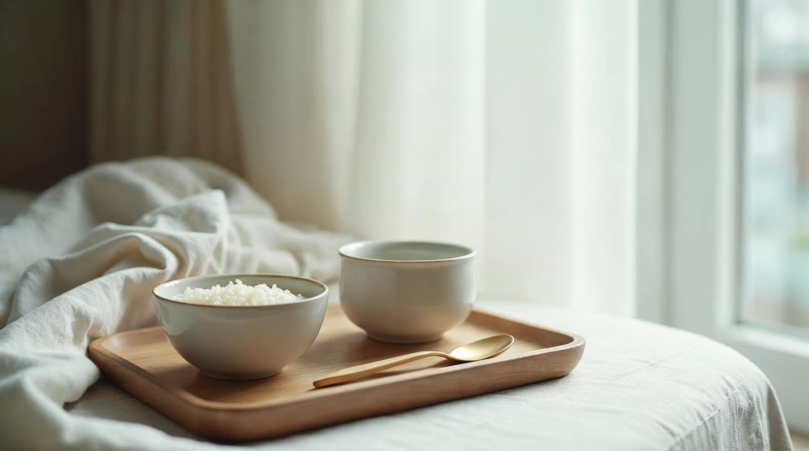
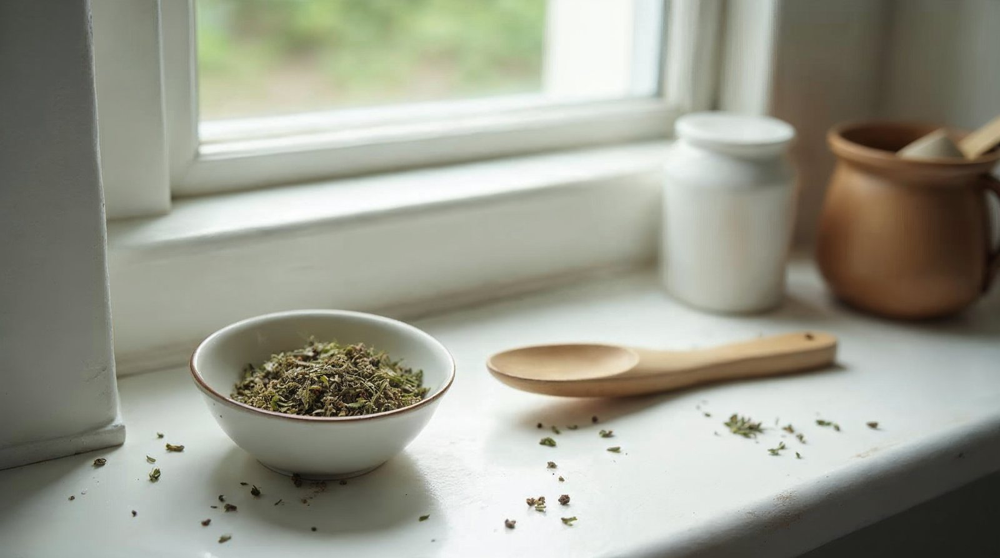
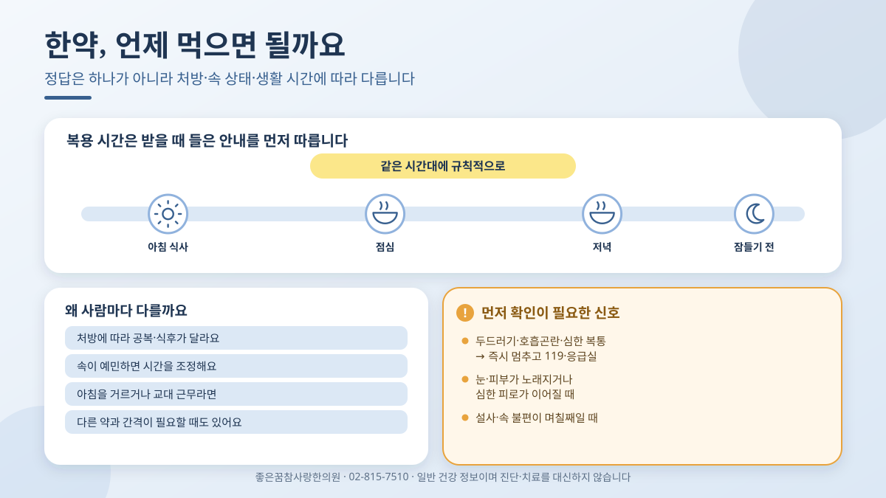

이종호 한의사 감수좋은꿈참사랑한의원 대표원장 (한의사 면허번호 19769)발행 2026-11-23 · 수정 2026-11-26
이 글의 차례
- 왜 복용 시간이 사람마다 다른가요
- 식전, 식후, 식간은 각각 언제를 말하나요?
- 왜 저는 시간보다 규칙을 더 강조하나요
- 다른 약과 함께 드실 때는 어떻게 하나요?
- 따뜻하게, 아니면 그대로 마시나요?
- 생활이 바뀌는 날에는 이렇게 해 보세요
- 처음 일주일은 이렇게 지켜보세요
- 자주 하는 오해
- 예를 들면 이런 경우입니다
- 한 번 놓쳤을 때는 어떻게 하나요?
- 커피나 차는 언제 마시면 될까요?
- 쓴맛 때문에 먹기 힘들다면요?
- 먼저 이렇게 여쭙니다
- 하루 몇 번, 며칠 동안 먹나요?
- 아이나 어르신이 드실 때는요?
- 왜 처음 받으실 때 시간을 함께 정하나요
- 스스로 점검해 보세요
- 일상에서 먼저 해 볼 수 있는 것
- 한의원에서 함께 살필 수 있는 경우
- 얼마나 지켜보고, 언제 알려 주면 좋을까요
- 여행이나 출장 중에는 어떻게 먹나요?
- 왜 복용 기록을 보면서 처방을 다시 보나요
- 이렇게 기록해 오시면 상담이 쉬워집니다
- 이런 증상은 먼저 확인이 필요합니다
- 복용 시간을 정할 때 함께 생각하는 것
- 함께 읽으면 좋은 글
한약을 식전에 먹을지 식후에 먹을지는 처방의 종류, 평소 속 상태, 하루 생활 시간에 따라 달라서 한약을 받을 때 들은 안내를 가장 먼저 따르시면 됩니다. 정답이 하나로 정해져 있지 않기 때문입니다. 공통으로 지키실 것은 같은 시간대에 규칙적으로 드시고, 불편하면 양이나 시간을 임의로 바꾸지 말고 상의하는 것입니다.
왜 복용 시간이 사람마다 다른가요
- 처방의 목적과 구성에 따라 공복에 맞는 경우와 식후가 편한 경우가 있습니다.
- 속이 예민한 분은 빈속에 먹으면 불편할 수 있어 시간을 조정하기도 합니다.
- 아침을 거르거나 교대 근무를 하면 식사 기준의 안내를 생활에 맞게 바꿔야 합니다.
- 함께 먹는 다른 약이 있으면 간격을 두어야 하는 경우가 있습니다.
식전, 식후, 식간은 각각 언제를 말하나요?
한약 봉투나 안내문에 적힌 말이 헷갈린다는 분이 많습니다. 일반적으로 쓰이는 뜻은 아래와 같고, 처방에 따라 시간이 조금 다를 수 있으니 받은 안내를 함께 확인해 주세요.
- 식전: 식사하기 전 빈속일 때를 말하며, 보통 식사 30분쯤 전으로 안내하는 경우가 많습니다.
- 식후: 식사를 마친 뒤를 말하며, 바로 드시기보다 조금 지나서 드시도록 안내하기도 합니다.
- 식간: 밥 먹는 도중이 아니라 끼니와 끼니 사이, 속이 어느 정도 비었을 때를 말합니다.
"식간"을 밥 먹는 중간으로 오해하시는 경우가 의외로 많습니다. 헷갈리면 받으실 때 시계 시간으로 바꿔서 물어보세요. "아침 8시에 먹으면 몇 시에 드시면 돼요" 하고 구체적으로 정해 드립니다.
왜 저는 시간보다 규칙을 더 강조하나요
식전이냐 식후냐보다 더 중요한 것은 매일 비슷한 시간에 꾸준히 드시는 것입니다. 들쭉날쭉하게 먹다 보면 놓치는 날이 늘고, 몸이 어떻게 반응하는지 살피기도 어려워집니다.
그래서 저는 이상적인 시간보다 실제로 지킬 수 있는 시간을 함께 찾습니다. 출근 전, 점심 직후, 잠들기 전처럼 이미 습관이 된 시간에 붙여 두면 놓치는 일이 줄어듭니다.
다른 약과 함께 드실 때는 어떻게 하나요?
병원에서 처방받은 약을 드시는 분은 그 약을 끊거나 줄이지 말고 그대로 드시면서 한의원에 목록을 알려 주세요. 한약과 겹치는 시간에 먹으면 속이 불편할 수 있어, 일반적으로는 서로 간격을 두도록 안내하는 경우가 많습니다.
간격을 얼마나 둘지는 드시는 약의 종류와 처방에 따라 달라 진료 때 함께 정합니다. 약 봉투나 처방전 사진을 보여 주시면 가장 정확하게 살펴볼 수 있습니다.
따뜻하게, 아니면 그대로 마시나요?
대부분은 미지근하게 데워 드시는 편이 속에 부담이 적습니다. 다만 처방과 계절, 속 상태에 따라 안내가 다를 수 있습니다. 데우는 방법과 보관은 따로 정리한 글을 참고해 주세요.
생활이 바뀌는 날에는 이렇게 해 보세요
- 늦잠을 자서 아침을 건너뛴 날: 그날 첫 끼 기준으로 시간을 맞추고, 하루 횟수를 무리하게 채우려 하지 마세요.
- 회식이나 모임이 있는 날: 술자리 전후에 한약을 바로 겹쳐 드시지 말고, 그날 복용을 어떻게 할지 미리 여쭤 주세요.
- 야간 근무를 하는 날: 시계 시간이 아니라 일어나서 먹는 첫 끼를 아침으로 보고 순서를 맞춥니다.
- 감기에 걸리거나 배탈이 난 날: 한약을 이어 드셔도 되는지 먼저 전화로 여쭤 주세요.
처음 일주일은 이렇게 지켜보세요
복용을 시작한 첫 주는 몸이 한약에 익숙해지는 시기입니다. 먹은 시간과 함께 속이 편했는지, 대변과 잠은 어땠는지를 하루 한 줄씩만 적어 두셔도 충분합니다. 이 기록을 보고 다음 진료 때 복용 시간을 다시 맞춥니다.
자주 하는 오해
- 한약은 꼭 식전에 먹어야 한다고 여기기 쉽지만, 처방과 속 상태에 따라 식후가 편한 경우도 있어 받은 안내를 따르시면 됩니다.
- 한 번 놓치면 다음에 두 봉을 함께 먹으면 된다고 생각하기 쉽지만, 임의로 양을 늘리지 말고 안내받은 방법을 확인하는 편이 안전합니다.
- 한약이니 다른 약과 상관없다고 여기기 쉽지만, 복용 중인 약이 있으면 간격과 조합을 함께 확인해야 합니다.
- 속이 조금 불편해도 참고 먹어야 한다고 생각하기 쉽지만, 불편하면 참지 말고 복용을 멈춘 뒤 알려 주셔야 방법을 함께 조정할 수 있습니다.
예를 들면 이런 경우입니다
- 예를 들어 아침을 거르고 출근하는 직장인이라면, 아침 복용을 출근 뒤 간단한 간식 다음으로 옮길 수 있는지 함께 정합니다.
- 예를 들어 학원 시간 때문에 저녁을 늦게 먹는 수험생이라면, 하루 일정표를 보며 복용 시간을 놓치지 않을 때를 함께 찾습니다.
- 예를 들어 혈압약을 드시는 어르신이라면, 드시는 약 목록을 먼저 확인하고 처방한 의사와 상의할 점이 있는지 함께 살핍니다.
한 번 놓쳤을 때는 어떻게 하나요?
복용 시간을 놓쳤다는 걸 금방 알아차렸다면 생각났을 때 드시고, 다음 복용 시간이 이미 가까워졌다면 그 회차는 건너뛰도록 안내하는 경우가 많습니다. 다만 처방에 따라 다를 수 있어 받으실 때 들은 방법을 먼저 따라 주세요.
놓친 봉을 모아 두었다가 한꺼번에 드시는 일은 피해 주세요. 남은 봉이 많아졌다면 다음 진료 때 개수를 알려 주시면, 복용 기간을 어떻게 이어 갈지 함께 정합니다.
커피나 차는 언제 마시면 될까요?
커피, 녹차, 홍차처럼 카페인이 든 음료는 한약과 바로 겹쳐 마시기보다 시간을 두고 드시도록 안내하는 경우가 많습니다. 우유나 두유, 과일 주스도 한약과 함께 섞어 드시지 말고 따로 드시는 편이 좋습니다.
처방에 따라 피하시라고 따로 말씀드리는 음식이 있을 수 있습니다. 그런 안내를 받으셨다면 그 내용을 먼저 지켜 주세요. 평소 즐겨 드시는 음료가 있다면 진료 때 미리 말씀해 주셔도 좋습니다.
쓴맛 때문에 먹기 힘들다면요?
한약의 맛이 부담스러워 복용을 미루게 되는 분도 계십니다. 미지근하게 데워 한 번에 드시고 바로 물로 입을 헹구면 덜 힘들다는 분이 많습니다. 차갑게 식으면 쓴맛과 향이 더 진하게 느껴지기도 합니다.
설탕이나 꿀을 타서 드시고 싶다면 처방에 따라 괜찮은지 먼저 여쭤 주세요. 그래도 너무 힘드시다면 참지 말고 말씀해 주세요. 복용 방법을 다시 정하거나 처방을 함께 살펴볼 수 있습니다.

먼저 이렇게 여쭙니다
- 하루 식사 시간과 아침을 거르는 날이 있는지
- 빈속에 무엇을 먹으면 속이 불편한 편인지
- 함께 복용하는 약과 영양제
- 근무 형태(주간, 야간, 교대)와 잠드는 시간
- 예전에 한약을 드시고 불편했던 적이 있는지
하루 몇 번, 며칠 동안 먹나요?
하루 복용 횟수와 전체 기간은 처방과 몸 상태에 따라 달라 받으실 때 안내해 드립니다. 하루 두 번을 안내받았다면 아침과 저녁처럼 간격이 비슷하게 벌어지도록 시간을 잡으시는 편이 좋습니다.
남은 봉수가 생각보다 많거나 적다면 중간에 한 번 세어 보세요. 계산과 다르다면 놓친 날이 있었거나 두 번 드신 날이 있었을 수 있습니다. 다음 진료 때 그 차이를 알려 주시면 복용 계획을 다시 맞춥니다.
아이나 어르신이 드실 때는요?
아이가 먹는 한약은 양과 횟수가 어른과 다르게 정해지는 경우가 많아, 받으실 때 들은 안내를 보호자께서 함께 기억해 주세요. 유치원이나 학교에 다니는 아이라면 등원 전과 하원 뒤처럼 집에서 챙길 수 있는 시간으로 맞추는 것이 편합니다.
어르신은 드시는 약이 많아 시간이 겹치기 쉽습니다. 약 상자에 요일과 시간을 적어 두거나, 가족이 복용 표를 만들어 냉장고에 붙여 두시면 놓치거나 겹쳐 드시는 일을 줄일 수 있습니다.
왜 처음 받으실 때 시간을 함께 정하나요
복용 방법을 종이에 적어 드리는 것만으로는 실제 하루와 맞지 않는 경우가 생깁니다. 그래서 저는 받으시는 자리에서 "보통 몇 시에 일어나세요", "점심은 몇 시쯤 드세요"를 여쭙고, 그 시간에 맞춰 복용 시간을 함께 적어 드립니다.
스스로 점검해 보세요
- 아침 식사를 거르는 날이 일주일에 세 번 이상이다
- 빈속에 무엇을 먹으면 속이 쓰리거나 메스꺼운 편이다
- 매일 먹는 약이나 영양제가 있다
- 근무 시간이 바뀌거나 밤에 일하는 날이 있다
- 약 먹는 시간을 자주 잊는 편이다
- 예전에 한약을 먹고 속이나 대변이 불편했던 적이 있다
해당하는 항목을 진료 때 말씀해 주시면 복용 방법을 정할 때 도움이 됩니다.
일상에서 먼저 해 볼 수 있는 것
- 휴대폰 알람으로 복용 시간을 정해 두기
- 외출할 때 한 봉을 챙겨 시간을 놓치지 않기
- 복용 뒤 속 느낌을 며칠 동안 한 줄씩 적어 보기
- 다른 약과 먹는 시간을 표로 정리해 겹치지 않게 하기
- 여행이나 출장 일정이 있으면 미리 알려 복용 계획을 함께 정하기
복용 시간을 놓치는 날이 잦다면 생활에 맞지 않는 시간일 수 있습니다. 혼자 바꾸기보다 다음 진료 때 실제 하루 일정을 말씀해 주시면 함께 다시 정합니다.
한의원에서 함께 살필 수 있는 경우
- 아침 식사를 거르는 날이 많을 때 복용 시간을 생활에 맞게 함께 정합니다.
- 속이 예민한 분은 복용 뒤 느낌을 보고 방법을 함께 조정합니다.
- 교대 근무나 야근이 있는 분은 하루 리듬에 맞춰 시간을 함께 정합니다.
좋은꿈참사랑한의원의 한약은 진단과 상담을 거친 뒤 처방합니다. 한약을 드릴 때 복용 시간과 횟수, 보관 방법을 함께 안내해 드립니다.
첫 방문에는 불편한 점과 함께 식사 시간, 근무 형태, 복용 중인 약을 먼저 여쭙고 진맥을 짚습니다. 필요하다고 판단되면 체성분이나 혈액 관련 수치를 장비로 확인하고, 적어 오신 생활 기록을 함께 보며 처방 방향을 설명해 드립니다. 한약을 받으실 때에는 언제, 하루 몇 번 드실지 생활에 맞춰 다시 정리해 드립니다.

얼마나 지켜보고, 언제 알려 주면 좋을까요
- 복용을 시작하고 처음 며칠은 속 느낌, 대변, 잠의 변화를 한 줄씩 적어 두세요.
- 속이 불편하거나 대변이 묽어지는 등 불편한 반응이 있으면 복용을 멈추고 전화(02-815-7510)로 알려 주세요. 먹는 시간이나 방법을 바꿔 이어 갈지 함께 정합니다.
여행이나 출장 중에는 어떻게 먹나요?
며칠 집을 비우는 일정이 있다면 챙겨 갈 봉수와 보관 방법을 미리 여쭤 주세요. 시차가 있는 곳으로 가신다면 현지 시간의 식사를 기준으로 복용 시간을 다시 맞추시면 됩니다.
여행 중에는 식사 시간이 불규칙해지고 술자리가 늘기 쉬워, 복용을 쉬었다가 돌아와서 이어 가도록 안내하는 경우도 있습니다. 어떻게 할지는 처방과 일정을 보고 함께 정합니다.
왜 복용 기록을 보면서 처방을 다시 보나요
같은 처방이라도 실제로 얼마나 규칙적으로 드셨는지에 따라 몸의 반응이 다르게 나타날 수 있습니다. 다음 진료에서 몸이 어떻게 달라졌는지 판단할 때, 복용 기록은 맥과 혀를 보는 것만큼 중요한 단서가 됩니다.
그래서 저는 놓친 날이 있었다고 말씀하시는 것을 꾸중할 일로 보지 않습니다. 놓친 날을 솔직하게 알려 주셔야 처방을 바꿀지, 복용 시간을 바꿀지를 제대로 정할 수 있습니다.
이렇게 기록해 오시면 상담이 쉬워집니다
- 실제로 먹은 시간과 놓친 횟수
- 복용 뒤 속 느낌, 대변, 잠의 변화
- 함께 먹은 약과 영양제
- 생활 일정이 바뀐 날
복용 방법에 관해 궁금한 점이 생기면 메모해 두셨다가 다음 진료 때 한꺼번에 여쭤 보셔도 됩니다. 급하게 정해야 하는 일이라면 전화로 먼저 물어봐 주세요. 작은 질문이라도 괜찮습니다.
이런 증상은 먼저 확인이 필요합니다
- 복용 뒤 두드러기, 숨쉬기 어려움, 심한 복통 가운데 하나라도 나타나는 경우
- 눈이나 피부가 노랗게 변하거나 심한 피로가 이어지는 경우
이런 신호가 있으면 한의원보다 가까운 병원이나 응급실을 먼저 찾으세요.
복용 시간을 정할 때 함께 생각하는 것
저는 복용 시간을 정할 때 처방의 성격과 함께 그분의 속 상태, 하루 일과, 함께 드시는 약을 같이 봅니다. 그래서 같은 처방을 받으신 두 분이 서로 다른 시간을 안내받는 일도 생깁니다.
주변에서 "한약은 이때 먹어야 한다"는 이야기를 들으셨더라도, 받으실 때 들은 안내를 먼저 따라 주세요. 다른 시간이 더 편할 것 같다면 바꾸기 전에 한 번 여쭤 주시면 함께 맞춰 드립니다.
함께 읽으면 좋은 글
- 받아 온 한약은 어떻게 보관하고 데워서 먹으면 되나요?
- 한약을 먹다가 속이 불편하거나 피부에 이상이 생기면 어떻게 알려야 하나요?
- 한약을 먹기 전에 한의원에 꼭 알려야 하는 것은 무엇인가요?

여쭙는 것
- 하루 식사 시간과 아침을 거르는 날이 있는지
- 빈속에 무엇을 먹으면 속이 불편한 편인지
- 함께 복용하는 약과 영양제
생활에서 해 볼 것
- 휴대폰 알람으로 복용 시간을 정해 두기
- 외출할 때 한 봉을 챙겨 시간을 놓치지 않기
- 복용 뒤 속 느낌을 며칠 동안 한 줄씩 적어 보기
한의원에서 함께 살필 것
- 아침 식사를 거르는 날이 많을 때 복용 시간을 생활에 맞게 함께 정합니다.
- 속이 예민한 분은 복용 뒤 느낌을 보고 방법을 함께 조정합니다.
- 교대 근무나 야근이 있는 분은 하루 리듬에 맞춰 시간을 함께 정합니다.
먼저 확인이 필요한 신호
- 복용 뒤 두드러기, 숨쉬기 어려움, 심한 복통 가운데 하나라도 나타나는 경우
- 눈이나 피부가 노랗게 변하거나 심한 피로가 이어지는 경우
한눈에 보는 표
| 구분 | 핵심 |
|---|---|
| 여쭙는 것 | 하루 식사 시간과 아침을 거르는 날이 있는지 빈속에 무엇을 먹으면 속이 불편한 편인지 |
| 생활에서 해 볼 것 | 휴대폰 알람으로 복용 시간을 정해 두기 외출할 때 한 봉을 챙겨 시간을 놓치지 않기 |
| 한의원에서 함께 살필 것 | 아침 식사를 거르는 날이 많을 때 복용 시간을 생활에 맞게 함께 정합니다. 속이 예민한 분은 복용 뒤 느낌을 보고 방법을 함께 조정합니다. |
| 먼저 확인이 필요한 신호 | 복용 뒤 두드러기, 숨쉬기 어려움, 심한 복통 가운데 하나라도 나타나는 경우 눈이나 피부가 노랗게 변하거나 심한 피로가 이어지는 경우 |
자주 묻는 질문
식사를 못 해서 시간을 놓쳤을 때는 어떻게 하나요?
임의로 두 번 먹지 말고 안내받은 방법을 확인하거나 한의원에 문의하세요.
다른 약과 같이 먹어도 되나요?
복용 중인 약을 알려 주시면 간격을 안내받을 수 있습니다.
커피나 술과 함께 마셔도 되나요?
처방에 따라 다르므로 한의원 안내를 따르시고, 헷갈리면 문의하시길 권합니다.
병원에서 받은 약을 먹고 있으면 그 약을 잠시 쉬어야 하나요?
아닙니다. 복용 중인 약은 처방한 의사와 상의 없이 줄이거나 끊지 마세요. 드시는 약 목록을 알려 주시면 한약과의 간격을 함께 살피고, 필요하면 처방한 의사와 상의하시도록 안내합니다.
복용 방법이 헷갈리면 어떻게 하나요?
받으실 때 들은 안내를 먼저 떠올려 보시고, 그래도 헷갈리면 전화(02-815-7510)로 문의해 주세요. 임의로 양이나 시간을 바꾸지 않는 편이 안전합니다.
좋은꿈참사랑한의원은 재진 때 지난번 이야기부터 이어서 여쭙니다. 진료시간과 예약은 오시는 길에서 확인하세요.
어디서 상담받을 수 있나요?
좋은꿈참사랑한의원은 서울 동작구 만양로2길 2 신성빌딩 3층·5층(서울 동작구 상도동, 7호선 상도역 3번 출구 근처)에 있습니다. 한의사 3명(이종호 대표원장, 조영기 수석진료원장, 정원영 진료원장)이 진료합니다. 진료시간은 평일 09:30~20:00(점심 13:00~14:00), 토·일·공휴일 09:30~15:00이며, 방문 전 전화로 확인을 권합니다. 예약은 네이버 예약, 카카오톡 상담, 전화 02-815-7510로 받습니다.
이 글은 일반적인 건강 정보이며 개인의 진단이나 치료를 대신하지 않습니다. 증상이 있거나 복용 중인 약이 있다면 진료를 통해 확인하세요. 치료 효과는 개인마다 다를 수 있습니다.
작성 기준: 일반적으로 알려져 있는 건강 정보를 참고해 정리했습니다(대표원장 감수). 증상 기록은 1~2주 동안 하루 1회, 비슷한 시간에 적어 오시면 지난 상태와 비교하기 쉽습니다.